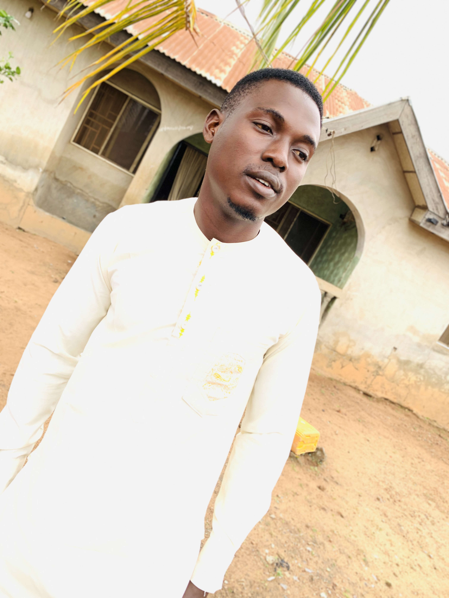

<!DOCTYPE html>
<html lang="en">
<head>
     <style>
          body
         {background-color: brown;}
     </style>
     <meta charset="UTF-8">
     <meta name="viewport" content="width=device-width, initial-scale=1.0">
     <title>About</title>
</head>
<body>
     
</body>
</html>
<a href="./New folder/aboutme.html"> About Me</a>

<h1> Welcome to My Website</h1>



<hr>
<h2> Who is the Developer Behind this Project?</h2>
<hr>
<p> My Name is Muhammed Adeniji Adeyemi. <br>
     A Graduate of Bayero University,Kano. I was Born on The third of November, 
     in Kwara state, in the city of ilorin. </p>
<p> I was born and brought up within Kwara State, ilorin where i attended my
     Elementary and basic schools.</p>
 <p> I attend Ilorin Grammar School Pre-Basic and Basic staff school where i
     had my pre nusery classes up to primary 5. <br>
        Then after Graduating from the school, i then movevd to a nearby secondary 
        school of the name " Ilorin Comprehnsive High School".</p>
        Here, i read my Jsss1 to Jss2 classes there, then due to the relocation, 
        i had to switch to another school that was closer to our new house. <br>
         Althoough, i didn't stay long at the school before i moved back to my previous
          secondary school.</p>
After my ,ss2 Program i switched my School to Ita-Alamu Community High School where i
 obtained my Senior WAEC Certificate.
<p> I wrote my Jamb which was a succsess and i got admitted to study BSc. Sociology
     in the Prestigous Bayero University, Kano Sate.</p>
<p> Over  the years, i have worked as a <strong> BlockChain Comunity Manager and Moderator,
     Virtual Assistance  and Customer Success.</strong> </p>
<p> Thanks for reading to the end. If i have any other thing to add, then i'd surely 
    do so in no time.</p>